IBlock it from above.
Place actors, walls, set pieces, lights and cameras. Camera cones and the 180° line show on the plan. G moves, R rotates, as in Blender.
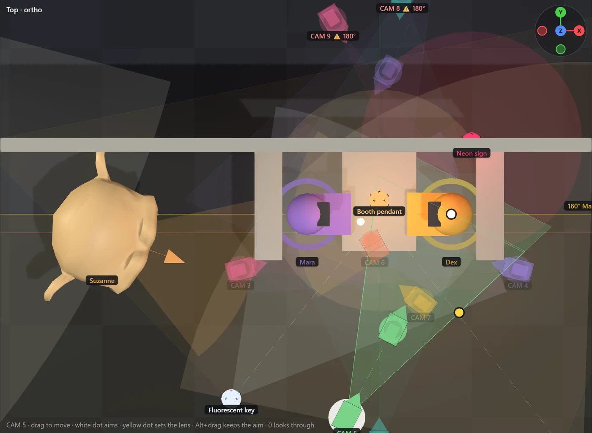
Frame first.
Shotwright is a previz tool for film and AI video. Block a scene, place cameras, cut coverage, then export a brief for Seedance or Higgsfield.
alpha-1. Used daily at ZenaStudios.
* UI pending serious review still
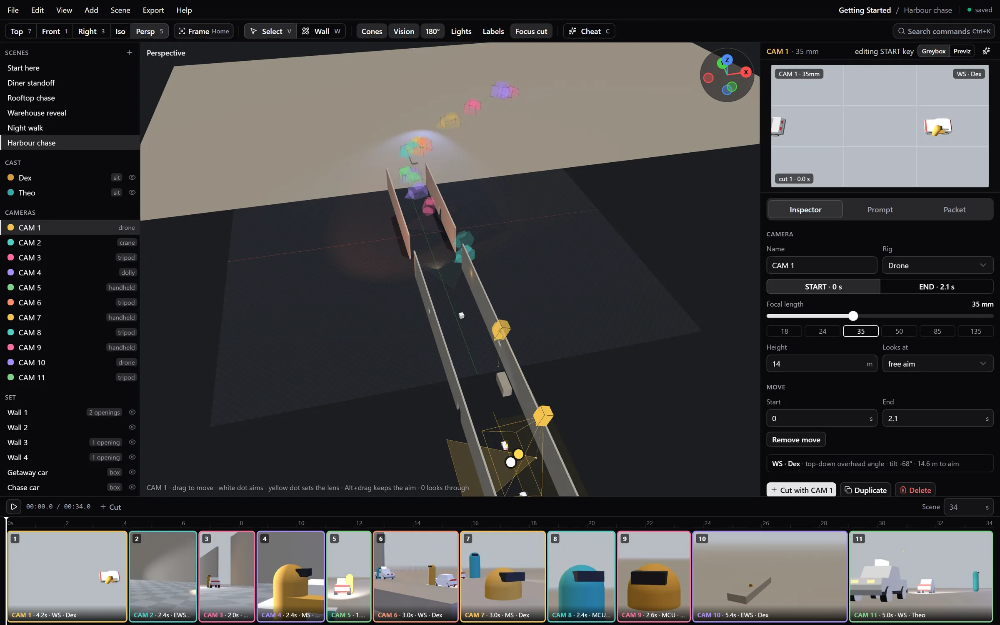
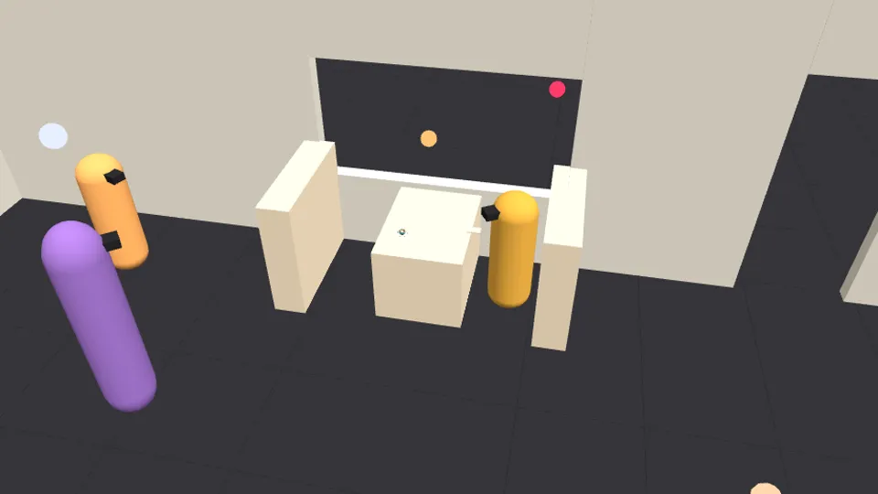
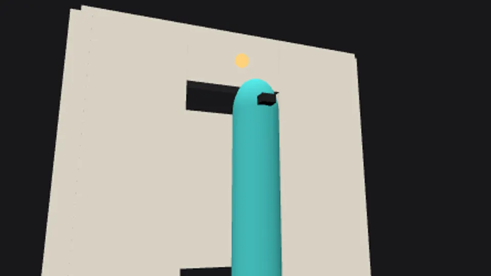
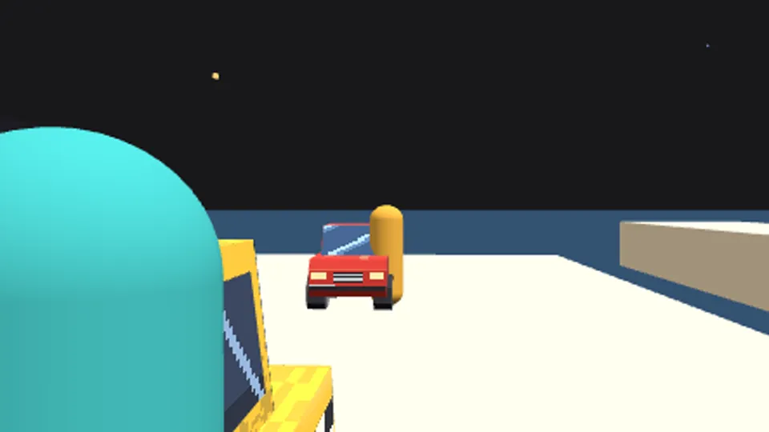
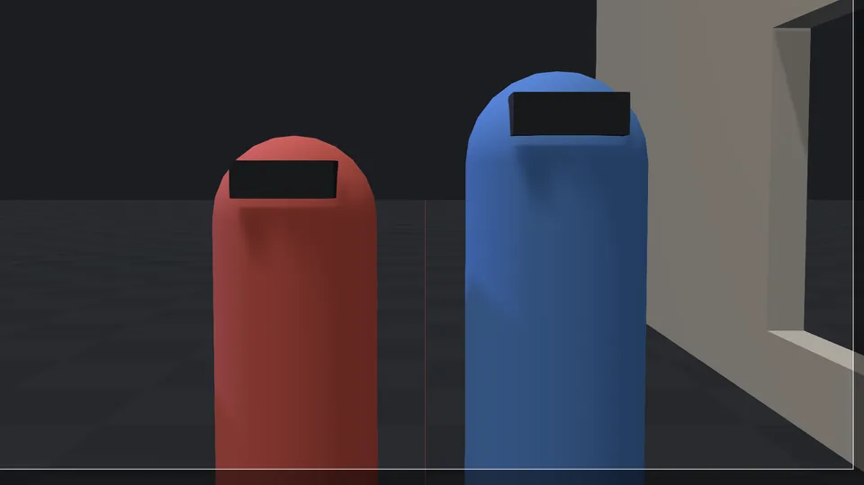
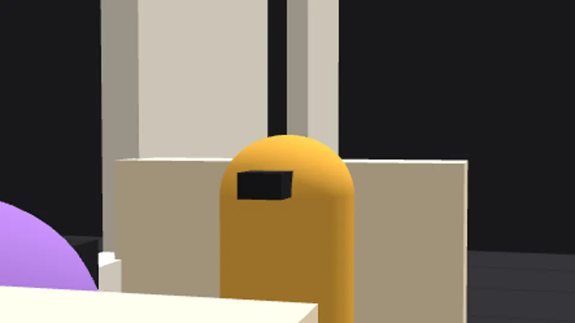
Just updated. Discover 165 strangely nostalgic, very much machine-generated props, from a popcorn bucket to a hot-air balloon. Shift A places one in the scene.
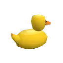
Rubber duck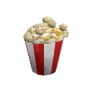
Popcorn bucket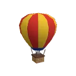
Hot air balloon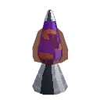
Lava lamp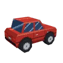
Car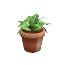
Houseplant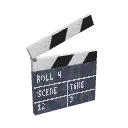
Film clapper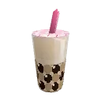
Bubble teaPlace actors, walls, set pieces, lights and cameras. Camera cones and the 180° line show on the plan. G moves, R rotates, as in Blender.

Lay cuts on an edit track, one camera per cut. A cheat moves something for one cut only. Shotwright flags cuts that cross the 180° line.
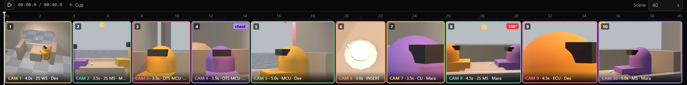
One export folder: stills and the animatic for the crew, the prompt and the scene data for the model. Zip and watermark are optional.
The prompt describes the cast, set, lens and move of each shot. Below is a real export of the diner scene. Hover a still to see its depth pass.
SCENE Diner standoff | 10 shots | 40.0 s | 16:9 | 24 fps Cast: - Mara, the purple figure: a police detective in her fifties, silver bob, a long charcoal trench coat - Dex, the amber figure: a wiry man in his twenties, shaved head, a scuffed amber bomber jacket, restless hands - Suzanne, the orange figure: a cheerful orange monkey head, the Blender mascot Set pieces: - Booth table, the grey box (0.8 x 1.1 x 0.74 m): a chipped formica diner table with a napkin dispenser - Booth seat, the grey box (0.3 x 1.2 x 1.15 m): a high-backed red vinyl booth seat - Facing seat, the grey box (0.3 x 1.2 x 1.15 m): the facing red vinyl booth seat, split at one seam - Coffee cup, the low-poly model (0.09 x 0.09 x 0.1 m): a thick white diner mug of black coffee on a saucer - Folded napkin, the grey box (0.12 x 0.08 x 0.01 m): a paper napkin folded over a name written in ballpoint - Counter, the grey box (4.5 x 0.7 x 1.05 m): a long chrome-edged lunch counter with red stools and a pie case Lights: - Fluorescent key: key light - Counter fill: fill light - Booth pendant: practical light - Neon sign: practical light - Passing headlights: back light Scene: An all-night roadside diner at 3 a.m.: a red vinyl booth against a rain-streaked window, a chrome counter behind, a neon OPEN sign buzzing in the glass. Style: 35mm anamorphic, sodium-vapour night outside, cool fluorescent spill inside, wet asphalt reflections, slow tension. Screen direction: shot 8 crosses the Mara-Dex line, so screen direction flips there. === 1. STILLS: restyle each cutNN.png with an image model === Keep the exact composition, camera angle and lens. Keep every figure at the same place and size, facing the same way. Replace the grey stand-ins and the checker floor with the cast and the scene. Use the same style for every still. === 2. SEEDANCE 2.0: the whole scene in one generation === Upload @Video1 = sequence.mp4. Optional: the restyled stills for shots 1 to 9 as @Image1 to @Image9 (Seedance takes up to 9 images). @Video1 is a greybox animatic of this scene. Follow its shot order, cut timing, framing and camera moves exactly. Ignore its grey look and checker floor. In @Video1, Mara is the purple figure, Dex is the amber figure and Suzanne is the orange figure. Shot 1 (0.0-4.0 s): Wide two-shot of Dex and Mara; Dex in the center, high angle, 28mm wide lens. The camera cranes down and pushes in, slowly, easing in and out, and ends on a full shot on Mara. Lit from frame left, with a practical light in frame. Dex is turned three-quarters to the camera, looking frame left toward Mara; Mara is in profile, looking frame right. Rain hammers the window of the empty diner. Mara crosses past the counter and slides into the booth across from Dex. Shot 2 (4.0-7.5 s): Medium two-shot of Mara and Dex; Mara on the left third, eye-level angle, 40mm standard lens. Static camera, locked off. Lit from frame left, with a practical light in frame. Mara is turned three-quarters to the camera, looking frame right; Dex is turned three-quarters to the camera, looking frame left toward Mara. Mara sets down her coffee. Neither speaks. The neon sign buzzes and flickers. Shot 3 (7.5-11.0 s): Over-the-shoulder medium close-up on Dex, over Mara's right shoulder; Dex in the center, eye-level angle, 50mm normal lens. Static camera, locked off. Lit from frame right. Dex faces the camera and looks just past the lens, frame left, at Mara. Dex: "I told you everything I know, Mara." He will not meet her eyes. Shot 4 (11.0-14.5 s): Over-the-shoulder medium close-up on Mara, over Dex's left shoulder; Mara in the center, eye-level angle, 50mm normal lens. Static camera, locked off. Lit from frame left. Mara faces the camera, looking frame right. Mara: "Then tell it again. Slower." She does not blink. Shot 5 (14.5-19.5 s): Medium close-up single on Dex; Dex in the center, eye-level angle, 50mm normal lens. The camera pushes in, very slowly, easing in and out, and ends on a close-up on Dex. Lit from frame left, with a practical light in frame. Dex is turned three-quarters to the camera, looking frame left toward Mara. Dex leans in and drops his voice as headlights sweep across the booth. Dex: "The truck came in on the fourth. Somebody paid the night guard to look away." Shot 6 (19.5-22.5 s): Insert on the Coffee cup, top-down overhead angle, 100mm short telephoto lens. Static camera, locked off. Lit from frame left. Mara's fingers turn the coffee cup a slow quarter turn on its saucer. The spoon rattles. Shot 7 (22.5-26.0 s): Close-up single on Mara; Mara in the center, eye-level angle, 85mm short telephoto lens. Static camera, locked off. Lit from frame left. Mara faces the camera, looking frame right. Mara: "Who paid him, Dex?" A long beat. The neon hum fills the silence. Shot 8 (26.0-30.5 s): Medium two-shot of Mara and Dex; Mara on the right third, eye-level angle, 35mm standard lens. Static camera, locked off. Lit from frame right, with a practical light in frame. Mara is turned three-quarters to the camera, looking frame left; Dex is in profile, looking frame right toward Mara. Seen from the wet street through the glass: Dex glances at the door, then back at Mara. Dex: "You don't want that name." Shot 9 (30.5-35.0 s): Extreme close-up single on Dex; Dex in the center, eye-level angle, 160mm long telephoto lens. Static camera, locked off. Lit from frame right. Dex is turned three-quarters to the camera, looking frame right toward Mara. Dex, barely a whisper: "Kessler." He slides a folded napkin across the table, stands and walks out of frame. Shot 10 (35.0-40.0 s): Medium shot single on Mara; Mara in the center, eye-level angle, 50mm normal lens. The camera pushes in, very slowly, easing in and out, and ends on a medium close-up on Mara. Lit from frame left, with a practical light in frame. Mara is turned three-quarters to the camera, looking frame left. Through the rain-streaked glass, Mara sits alone in the booth and unfolds the napkin. Her face hardens. Scene: An all-night roadside diner at 3 a.m.: a red vinyl booth against a rain-streaked window, a chrome counter behind, a neon OPEN sign buzzing in the glass. Style: 35mm anamorphic, sodium-vapour night outside, cool fluorescent spill inside, wet asphalt reflections, slow tension. === 3. SHOT BY SHOT: Seedance single shot or Higgsfield === Shot 1 | CAM 1 | 4.0 s | cut01.png + cut01_end.png + cut01.mp4 Higgsfield camera preset: Crane Down (also try Dolly In) Prompt: Wide two-shot of Dex and Mara; Dex in the center, high angle, 28mm wide lens. The camera cranes down and pushes in, slowly, easing in and out, and ends on a full shot on Mara. Lit from frame left, with a practical light in frame. Dex is turned three-quarters to the camera, looking frame left toward Mara; Mara is in profile, looking frame right. Rain hammers the window of the empty diner. Mara crosses past the counter and slides into the booth across from Dex. Shot 2 | CAM 2 | 3.5 s | cut02.png Higgsfield camera preset: Static Prompt: Medium two-shot of Mara and Dex; Mara on the left third, eye-level angle, 40mm standard lens. Static camera, locked off. Lit from frame left, with a practical light in frame. Mara is turned three-quarters to the camera, looking frame right; Dex is turned three-quarters to the camera, looking frame left toward Mara. Mara sets down her coffee. Neither speaks. The neon sign buzzes and flickers. Shot 3 | CAM 3 | 3.5 s | cut03.png Higgsfield camera preset: Static Prompt: Over-the-shoulder medium close-up on Dex, over Mara's right shoulder; Dex in the center, eye-level angle, 50mm normal lens. Static camera, locked off. Lit from frame right. Dex faces the camera and looks just past the lens, frame left, at Mara. Dex: "I told you everything I know, Mara." He will not meet her eyes. Shot 4 | CAM 4 | 3.5 s | cut04.png Higgsfield camera preset: Static Prompt: Over-the-shoulder medium close-up on Mara, over Dex's left shoulder; Mara in the center, eye-level angle, 50mm normal lens. Static camera, locked off. Lit from frame left. Mara faces the camera, looking frame right. Mara: "Then tell it again. Slower." She does not blink. Shot 5 | CAM 5 | 5.0 s | cut05.png + cut05_end.png + cut05.mp4 Higgsfield camera preset: Dolly In Prompt: Medium close-up single on Dex; Dex in the center, eye-level angle, 50mm normal lens. The camera pushes in, very slowly, easing in and out, and ends on a close-up on Dex. Lit from frame left, with a practical light in frame. Dex is turned three-quarters to the camera, looking frame left toward Mara. Dex leans in and drops his voice as headlights sweep across the booth. Dex: "The truck came in on the fourth. Somebody paid the night guard to look away." Shot 6 | CAM 6 | 3.0 s | cut06.png Higgsfield camera preset: Static Prompt: Insert on the Coffee cup, top-down overhead angle, 100mm short telephoto lens. Static camera, locked off. Lit from frame left. Mara's fingers turn the coffee cup a slow quarter turn on its saucer. The spoon rattles. Shot 7 | CAM 7 | 3.5 s | cut07.png Higgsfield camera preset: Static Prompt: Close-up single on Mara; Mara in the center, eye-level angle, 85mm short telephoto lens. Static camera, locked off. Lit from frame left. Mara faces the camera, looking frame right. Mara: "Who paid him, Dex?" A long beat. The neon hum fills the silence. Shot 8 | CAM 8 | 4.5 s | cut08.png | CROSSES THE LINE Higgsfield camera preset: Static Prompt: Medium two-shot of Mara and Dex; Mara on the right third, eye-level angle, 35mm standard lens. Static camera, locked off. Lit from frame right, with a practical light in frame. Mara is turned three-quarters to the camera, looking frame left; Dex is in profile, looking frame right toward Mara. Seen from the wet street through the glass: Dex glances at the door, then back at Mara. Dex: "You don't want that name." Shot 9 | CAM 9 | 4.5 s | cut09.png Higgsfield camera preset: Static Prompt: Extreme close-up single on Dex; Dex in the center, eye-level angle, 160mm long telephoto lens. Static camera, locked off. Lit from frame right. Dex is turned three-quarters to the camera, looking frame right toward Mara. Dex, barely a whisper: "Kessler." He slides a folded napkin across the table, stands and walks out of frame. Shot 10 | CAM 10 | 5.0 s | cut10.png + cut10_end.png + cut10.mp4 Higgsfield camera preset: Dolly In Prompt: Medium shot single on Mara; Mara in the center, eye-level angle, 50mm normal lens. The camera pushes in, very slowly, easing in and out, and ends on a medium close-up on Mara. Lit from frame left, with a practical light in frame. Mara is turned three-quarters to the camera, looking frame left. Through the rain-streaked glass, Mara sits alone in the booth and unfolds the napkin. Her face hardens.
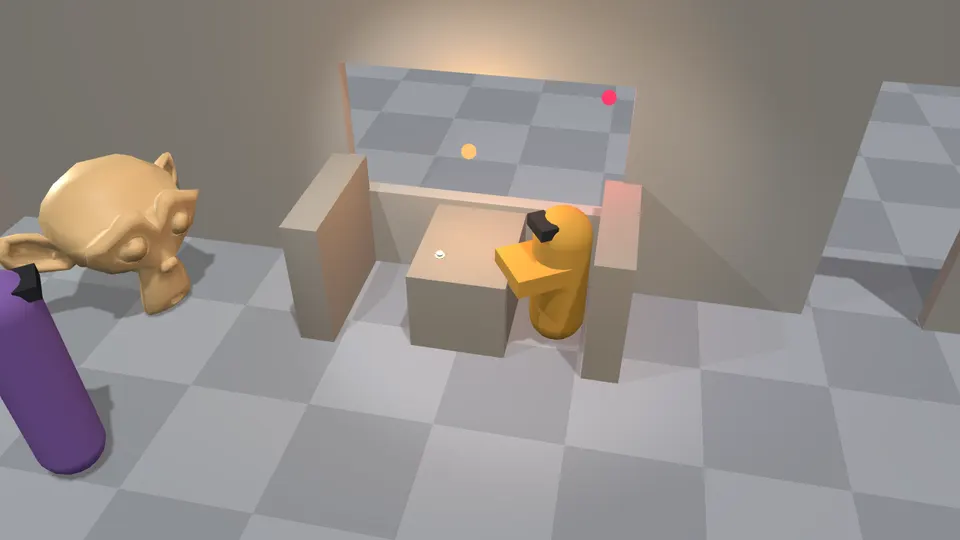
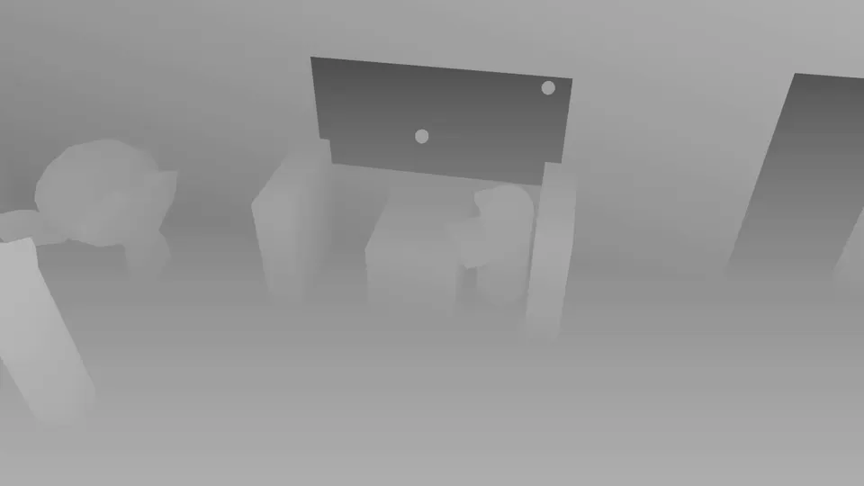
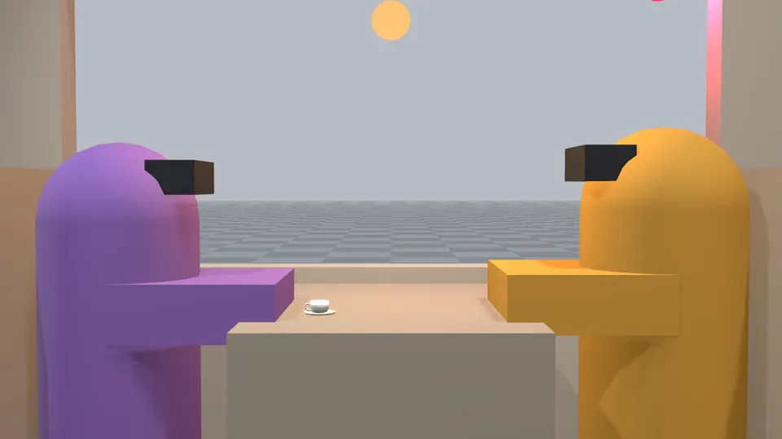
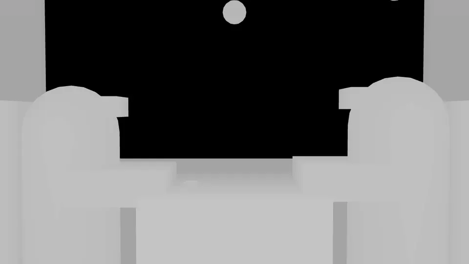
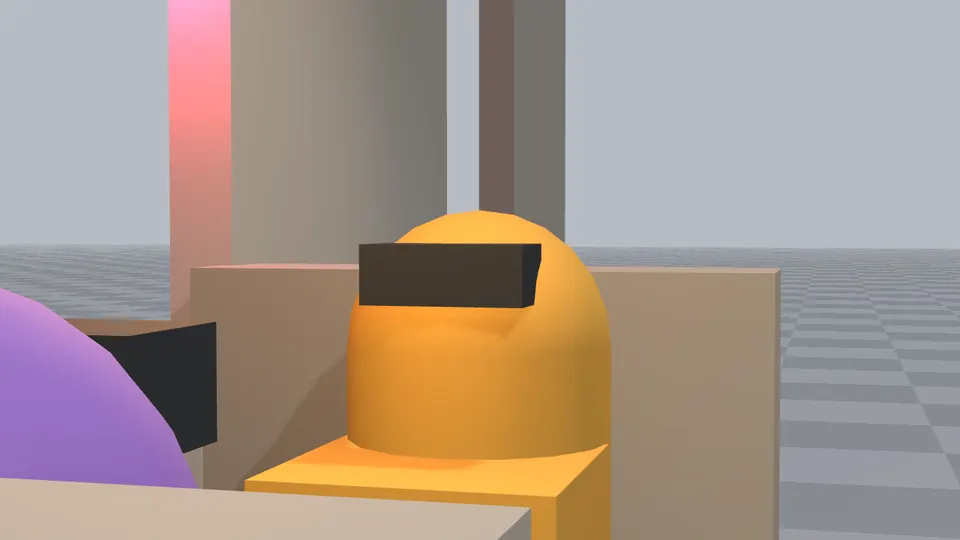
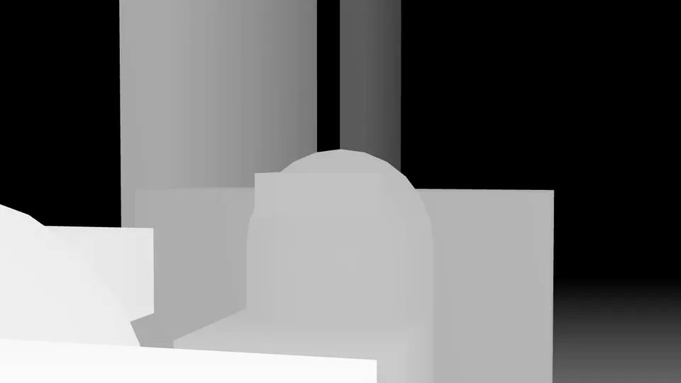
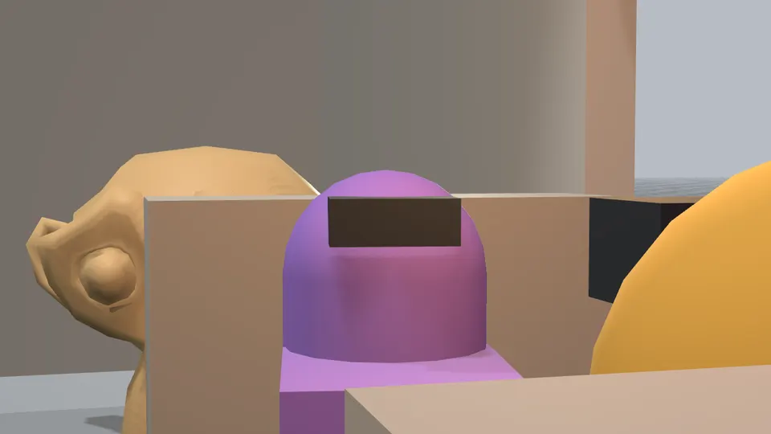
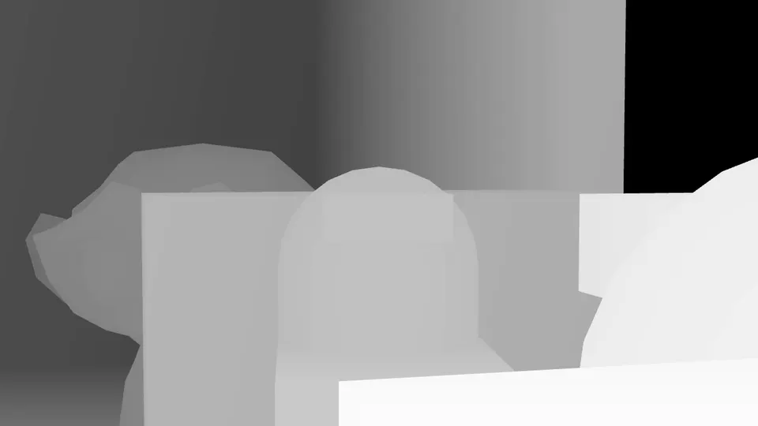
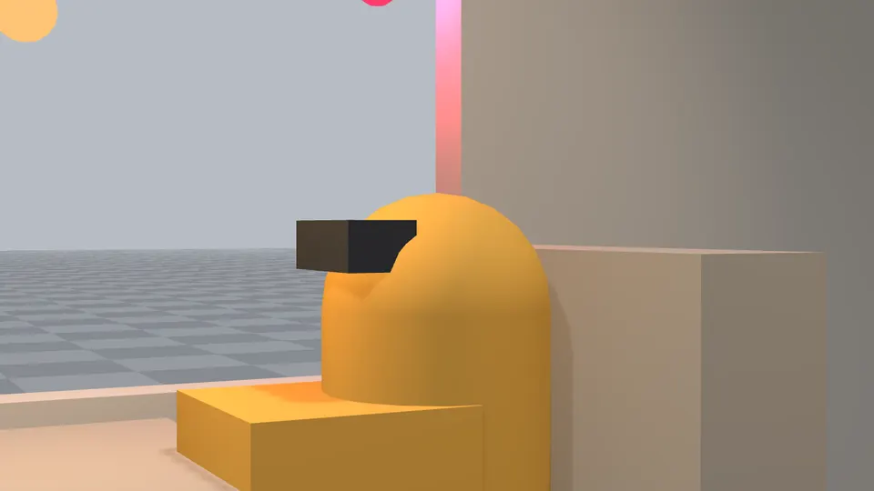
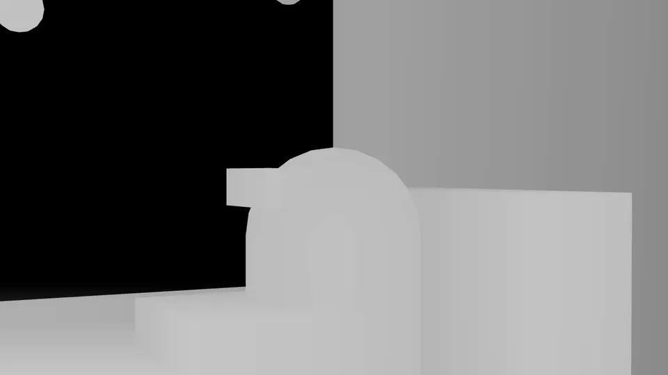
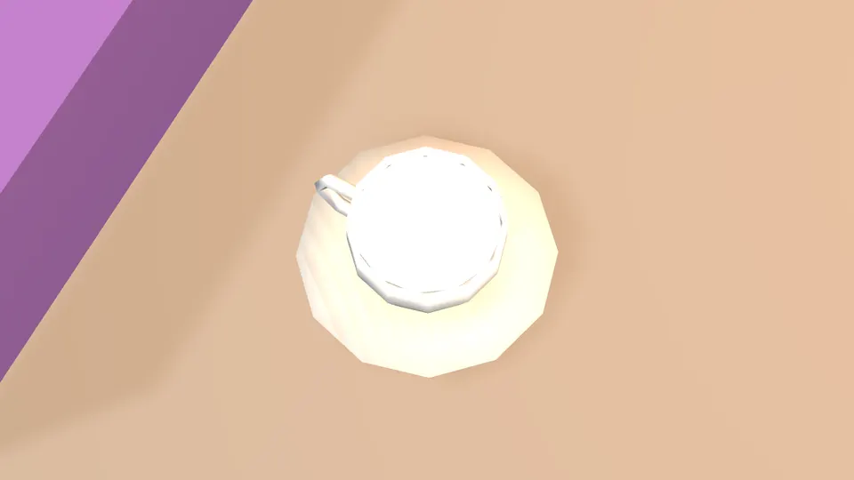
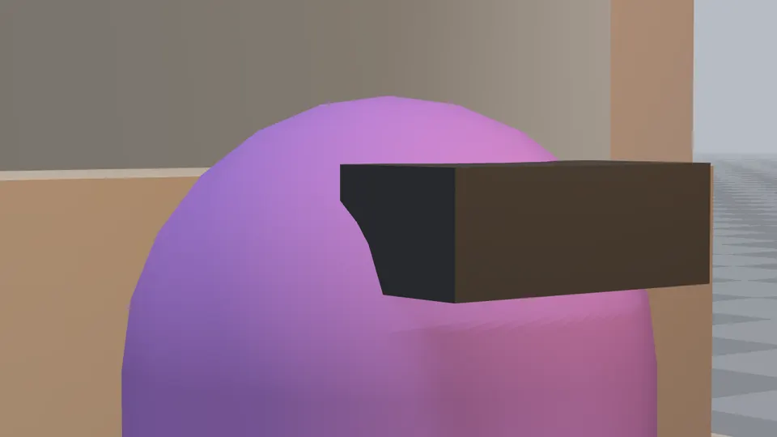
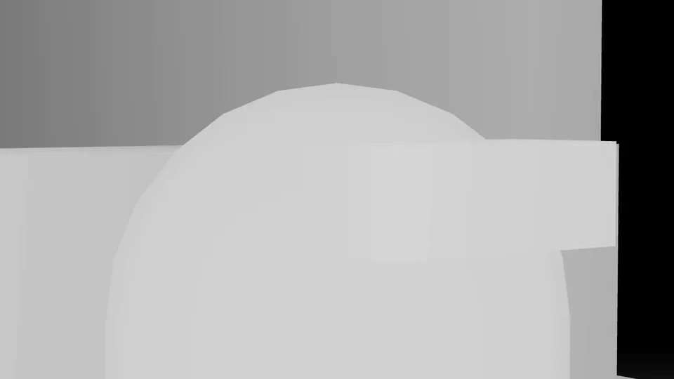
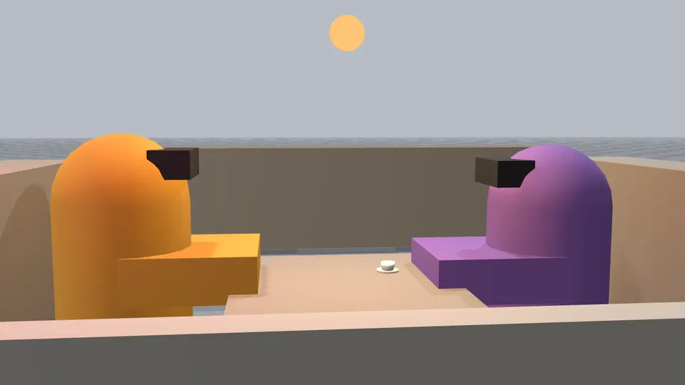
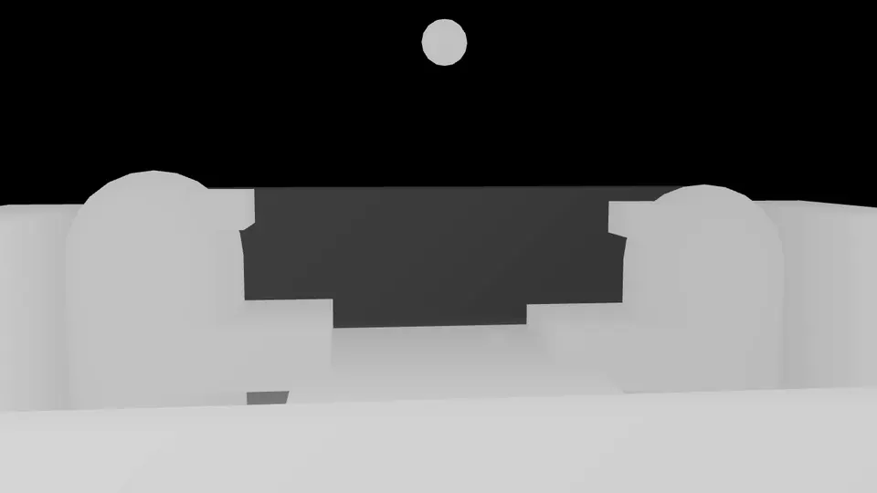
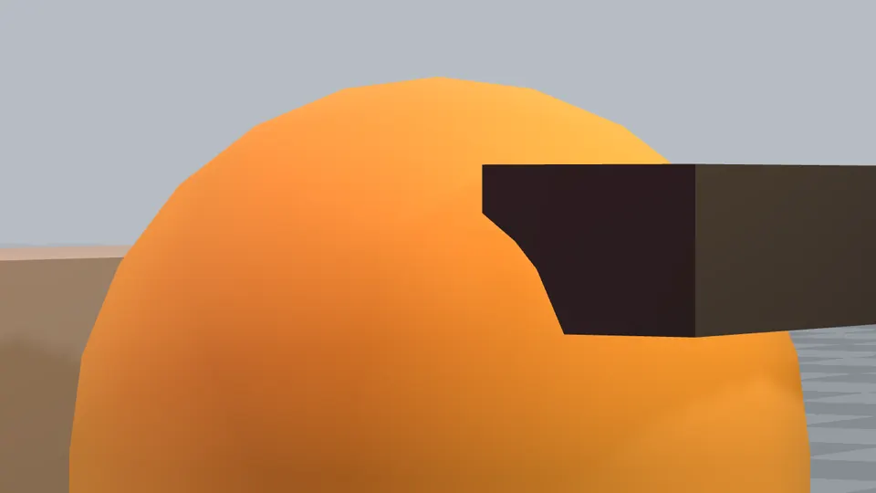
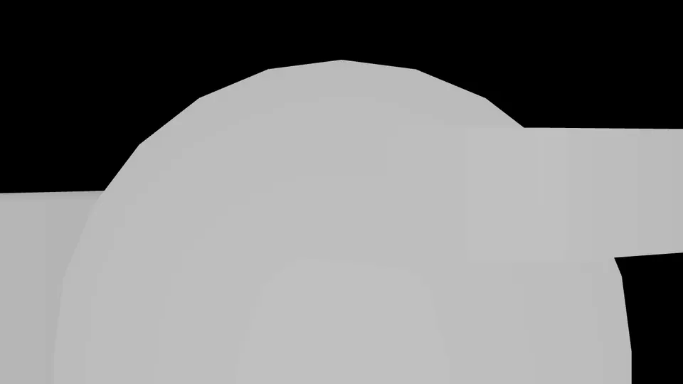
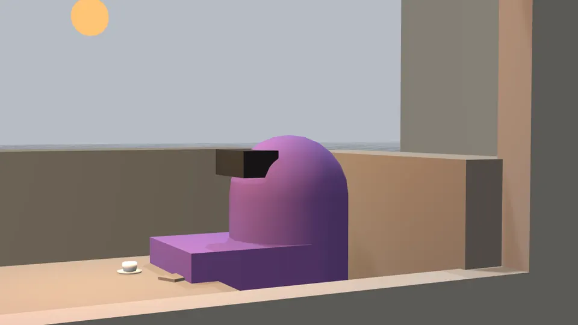
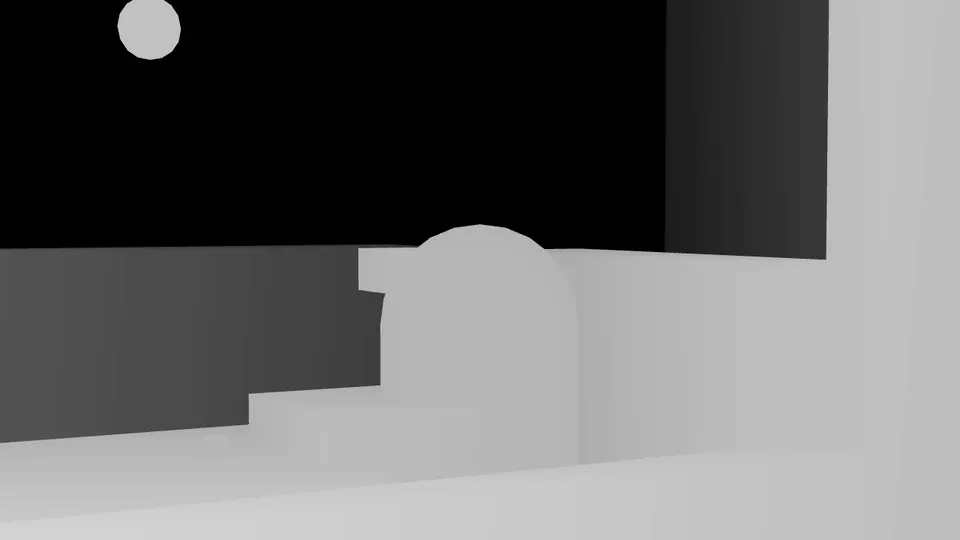
{
"project": {
"version": 1,
"name": "Getting Started",
"fps": 24,
"aspect": "16:9",
"cast": [
{
"id": "mAna",
"name": "Ana",
"desc": "a woman in her thirties, dark curly hair, a mustard wool coat over a cardigan",
"color": "#c8564b",
"colorName": "red",
"height": 1.65
},
{
"id": "mBen",
"name": "Ben",
"desc": "a tall man in his forties, grey stubble, a navy work jacket with the collar up",
"color": "#4f7fc4",
"colorName": "blue",
"height": 1.82
},
{
"id": "mCleo",
"name": "Cleo",
"desc": "a lean young woman, short bleached hair, a green raincoat, running shoes",
"color": "#59a15a",
"colorName": "green",
"height": 1.72,
"glb": "assets/stand-in.glb"
},
{
"id": "mDex",
"name": "Dex",
"desc": "a wiry man in his twenties, shaved head, a scuffed amber bomber jacket, restless hands",
"color": "#d29b3a",
"colorName": "amber",
"height": 1.76
},
In use at ZenaStudios on Windows and macOS. No public download yet. The file format may still change.
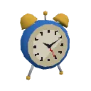
alpha-2KeyframesKeys on every property, auto-key and I to insert.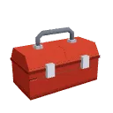
alpha-2GizmosHandles for cameras, actors and lights.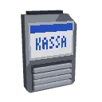
alpha-2Previz framesOne Higgsfield still per cut, kept as a take.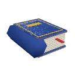
alpha-3StoryboardsStoryboard sheets, overheads and shot lists.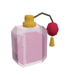
alpha-3ReferencesReference images for cast, props and locations.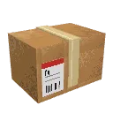
Shotwright 1Public releaseSigned installers for Windows and macOS, and a stable file format.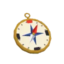
Shotwright 1First runA guided tour, docs and shortcut help.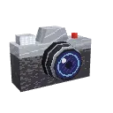
Shotwright 1.5Real lensesFocus, aperture and depth of field.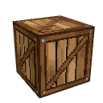
Shotwright 1.5Asset libraryStand-ins, a set-piece kit and Blender import.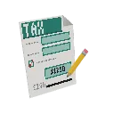
Shotwright 2Script importFountain and Final Draft scripts as scene breakdowns and draft cuts.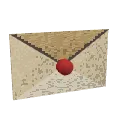
Shotwright 2Shared reviewNotes pinned to cuts and frames.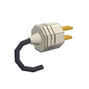
Shotwright 2Round-tripScenes to Blender and back. Edits to Premiere and Resolve.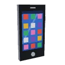
Shotwright 3Virtual cameraA phone as the camera, with an AR viewfinder.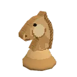
Shotwright 3Blocking assistantSuggests coverage from the script.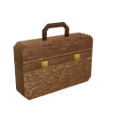
Shotwright 4Shoot dayCall sheets, set-up order and a tracker of finished cuts.